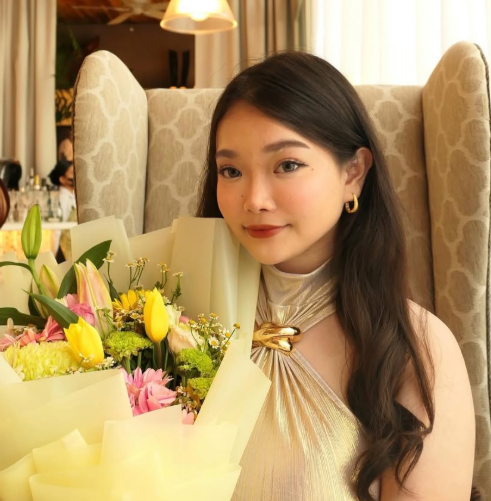
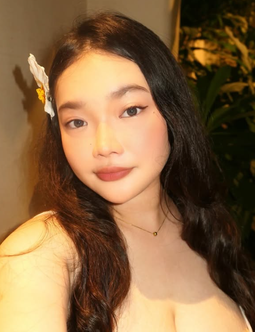
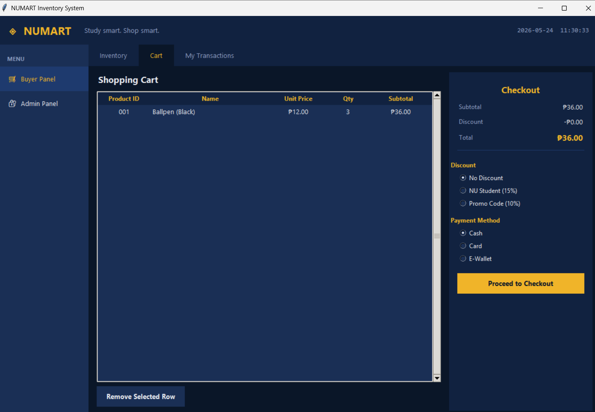
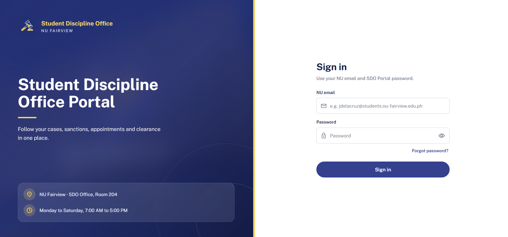
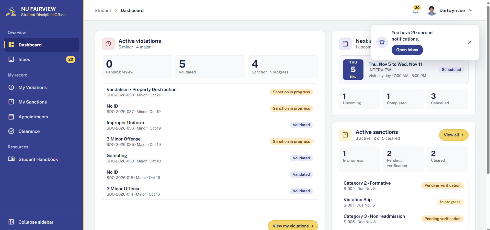

Programming & Development
- HTMLWebpage structure & content organization
- CSSWebsite styling, layouts & visual presentation
- PythonProgramming fundamentals, logic & data structures
- SQLDatabase concepts & data organization

WELCOME TO MY CREATIVE CORNER
I’m Alyanna Gabrienne Feleo
A little logic, a little lace, and lots of learning.
An IT student with a creative mind, an interest in technology, and a love for turning ideas into meaningful experiences.
A little about me currently collecting ideas & little winsA NOTE FROM MY DESK
Hello, lovely!
I'm Alyanna Gabrienne Feleo, a second-year Bachelor of Science in Information Technology student at National University - Fairview. My friends call me Yenni or Gabbie, and I have two dogs named Chibi and Miko. I enjoy exploring how technology can turn ideas into organized, meaningful, and functional solutions.
Beyond the technical side of IT, I have a creative passion for beauty, makeup, and visual storytelling. I'm also a beauty and lifestyle content creator on TikTok, where I've built a growing audience of 117K followers.
I enjoy experimenting with creative makeup looks, exploring different makeup styles, and expressing my creativity through content creation. These experiences have allowed me to explore another side of creativity while connecting with an audience through my interests.
I'm particularly interested in database management, system analysis, and project coordination, where creativity and logical thinking can work together. I believe technology and creativity can complement each other to bring meaningful ideas to life.

THINGS I’M LEARNING & USING
A growing collection of tools, skills, and creative things.
curiosity is
part of the toolkit! ♡
A PAGE FROM MY ACADEMIC JOURNAL
A chapter in progress
I’m a second-year Bachelor of Science in Information Technology student at National University - Fairview. My studies are helping me grow my understanding of technology, information systems, and the thoughtful work behind useful digital solutions.
I’m also a consistent First Honors Dean’s Lister, an achievement that reflects the care and dedication I bring to my studies.
| School | National University - Fairview |
|---|---|
| Program | Bachelor of Science in Information Technology (BSIT) |
| Year level | Second Year |
| Academic distinction | Consistent First Honors Dean’s Lister |
LITTLE THINGS I’VE BUILT
Academic work, ideas in progress, and lessons along the way.

PYTHON · ACADEMIC PROJECT
An academic Python project designed to manage product inventories and simplify shopping transactions. It includes product management, cart operations, checkout and payment handling, and transaction history. The project applies different data structures to organize and manage information efficiently.
A few building blocks


SYSTEM ANALYSIS · LIVE PROJECT
A digital management platform designed to improve Student Discipline Office transactions. It organizes disciplinary cases, gives students access to case updates and clearance requirements, supports document submissions and appointments, and automates email notifications.
Tools & technologies
A FEW THINGS I’M WORKING TOWARD
Continue developing my technical knowledge in web development, database management, and information systems.
Learn how to analyze problems, organize information, and create systems that make everyday processes more efficient.
Strengthen my communication, decision-making, teamwork, and project management skills so I can eventually lead technology projects.
Continue exploring the intersection of creativity and technology while developing my skills in content creation, visual storytelling, and digital platforms.
MY INBOX IS OPEN
Have a kind note, a project question, or just want to say hello? I’d love to hear from you.
alyannafeleo20@gmail.com GitHub LinkedInhope to hear from you! ♡